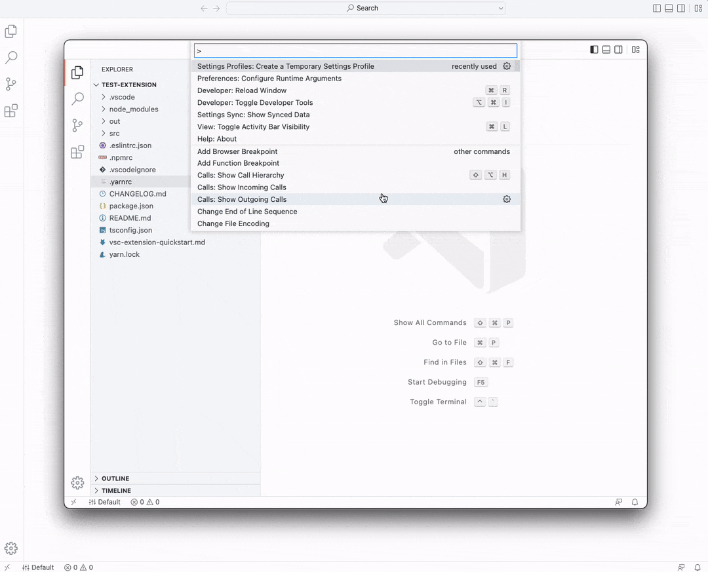
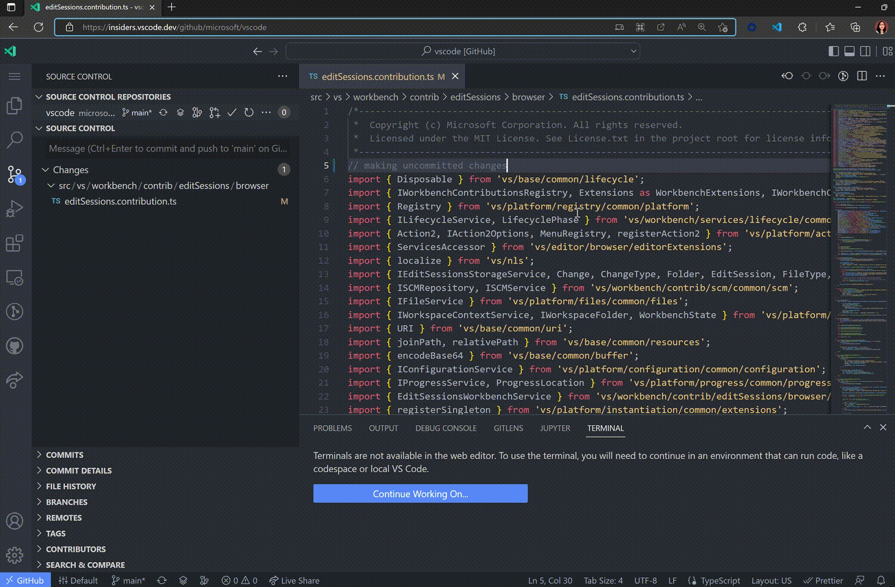

August 2022 (version 1.71)
Update 1.71.1: The update addresses this security issue.
Update 1.71.2: The update addresses these issues.
Downloads: Windows: User System Arm64 | Mac: Universal Intel silicon | Linux: deb rpm tarball Arm snap
Welcome to the August 2022 release of Visual Studio Code. August is when many of the engineers on VS Code take their vacations, but there are still many updates in this version that we hope you'll like:
- Merge editor improvements - Easier transition between text and merge editors.
- Expanded codecs support - To help display embedded audio and video in notebooks and webviews.
- File rename selection - Pressing F2 selects filename, whole name, or file extension.
- New Code Action UI - Quickly find the Code Action you're looking for.
- Terminal updates - Shell integration for fish and Git Bash, new smooth scrolling.
- Jupyter notebook image pasting - Paste and preview image files in notebook Markdown cells.
- TypeScript livestreams - Watch TS "Crash Course" or "Tips and Tricks" on YouTube.
- Live Preview extension - Live Preview now supports multi-root web projects.
- Markdown Language Server blog post - Learn how Markdown support moved to a Language Server.
If you'd like to read these release notes online, go to Updates on code.visualstudio.com.
Insiders: Want to try new features as soon as possible? You can download the nightly Insiders build and try the latest updates as soon as they are available.
Workbench
Merge editor improvements
Opening the merge editor from files with conflicts
A file that has a conflict will now automatically show an Open in Merge Editor button to transition between the text and merge editors.
Merge editor file not modified on open
VS Code no longer modifies the result file when opening it in the merge editor (conflicting regions were replaced with base). Instead, the conflict markers remain in the file but are hidden in the result view. The checkboxes can be used to replace the conflict markers with either side, a combination of both sides or, by unchecking them, with base.
Restoring old conflict decorators
The old inline conflict decorators are no longer disabled, so the merge editor and inline experience can be used together. When the merge editor opens, you can get the previous experience with a single click in the editor toolbar:
By clicking the same icon next to the file name in the Source Control view, you can skip the merge editor entirely.
However, you can switch between the new and old experience at any time and even use them in parallel:
Checkbox improvements
We now make sure that the checkboxes of a conflict are always visible, even when the conflict is larger than the viewport. Colors are used to emphasize the checkboxes for unhandled conflicts.
Diffing algorithm improvements
We started exploring alternative diffing algorithms to improve the quality of conflicts. A new experimental diffing algorithm can be enabled with the following setting:
"mergeEditor.diffAlgorithm": "experimental",
This new algorithm is not optimized for performance yet, but improves the merge editor experience for many edge-cases.
Going forward
In this release, we focused on the most important UX issues of the merge editor and fixed many bugs. If you still find yourself confused by the new merge editor, we would love to hear from you! Please create a new issue in our repo, share a screenshot and your merge editor state (using the Copy Merge Editor State as JSON command). We really appreciate all the feedback we've gotten so far, and more feedback will help us make the merge editor experience great for everyone.
Our future work will focus on a separate base view, conflict minification, diffing algorithm refinement, and other improvements.
FFmpeg codecs support
The FFmpeg shared library that ships as part of the VS Code previously had only support for the FLAC codec. With this release, the library has been updated to support the following list of codecs and containers. This will allow more audio and video files to be played from notebooks or by extensions embedding audio and video into webviews.
- Vorbis
- Flac
- H.264
- VP8
- WAV
- MP3
- Ogg

Theme: fairyfloss (preview on vscode.dev)
Explorer rename selection improvements
After initiating a rename action on a file, pressing the F2 key will cycle through the file name, entire selection, and file extension to allow for more flexible keyboard-only interaction.
Rounded buttons
We've update all of our buttons to have a slight rounded corner to better match our design aesthetic.
Theme: Material Theme Palenight High Contrast
Window Controls Overlay on Windows
In release 1.68, VS Code adopted the Window Controls Overlay feature support from Electron behind an experimental flag and was off by default. We have resolved the remaining issues around this feature affecting VS Code, allowing us to enable it by default for all users on Windows.
The Windows Controls Overlay feature lets VS Code users on Windows 11 select Snap Layouts to place VS Code on their desktop.
Tree view Expand Mode
The setting Workbench > Tree: Expand Mode (workbench.tree.expandMode), which controls whether tree nodes expand on single-click or double-click, will now be respected by tree views that are contributed by extensions.
Editor
Sticky Scroll
Sticky scroll shows the current scope at the top of the view port. The feature is no longer experimental and can be enabled through the settings with editor.stickyScroll.enabled. Further improvements are:
- It is possible to set the maximum number of lines to display with the Editor > Sticky Scroll: Max Line Count (
editor.stickyScroll.maxLineCount) setting. The default maximum is 5 lines. - You can use
Ctrl/Cmd + Clickin the sticky scroll, to navigate to a definition.
New Code Action control
We've completely overhauled the Code Action control. Instead of a simple menu of Code Actions, there is now a custom control that makes it easier to find the Code Action you want:
The new control also lets VS Code surface additional information. For example, you can now hover over disabled Code Actions to learn why they are disabled:
You can also customize the keyboard shortcuts used to navigate through the Code Action list by modifying the keybindings for the following commands:
selectNextCodeActionselectPrevCodeActionacceptSelectedCodeAction
Going forward, the new code action UI provides a great foundation for further UX improvements. Be sure to let us know if you have any suggestions!
Configure suggest matching
There is a new setting to configure IntelliSense filtering. By default, the first character must match a word start, for example c must match console or WebContext but won't match description. The editor.suggest.matchOnWordStartOnly setting changes this behavior. When disabled, filtering takes any match into account - this leads to more results but filtering still happens by match quality.
In the short video below, you can see that when matchOnWordStartOnly is disabled, suggestions for 'dir' include more items, such as 'mkdir' and 'makedirs'.

Source Control
Commit action button improvements
Users can globally control the secondary action (for example, pull, sync) that is being executed following a successful commit operation using the git.postCommitCommand setting. This milestone we have added a new setting git.rememberPostCommitCommand that can be enabled to remember the last executed secondary action per repository.
Terminal
Shell integration improvements
The following improvements to shell integration were made this release:
- Fish shell integration is available as an experimental manual install only. See the Shell Integration documentation for how to install it.
- Git bash for Windows shell integration is available as an experimental manual install only. See the section on manual installation for details.
- Support for common alternative current working directory sequences:
OSC 6 ; scheme://<cwd> ST,OSC 1337 ; CurrentDir=<cwd> ST,OSC 9 ; 9 ; <cwd> ST - Better handling of various shell integration edge cases.
Smooth scrolling
The terminal now supports smooth scrolling, which will animate scrolling for a short period of time to help you see your location after scrolling, similar to the editor and lists. To enable smooth scrolling set:
"terminal.integrated.smoothScrolling": true
Underline styles and colors
Underline styles and colors are now supported using the escape sequences originally pioneered by the kitty terminal. For supporting programs, these new underlines should light up automatically, provided they send these sequences to the VS Code terminal.
Included in this change is improved underline rendering when GPU acceleration is enabled, which avoids glyphs with long descenders and the underline overlapping:
Underline styles and colors are currently not supported on Windows due to an outstanding issue in ConPTY.
Rendering improvements
Several improvements were made to terminal rendering:
-
A longstanding bug that sometimes caused blurriness when the workbench was zoomed in or out has been fixed!
-
When minimum contrast ratio is enabled and the text luminance needs to be flipped to ensure the ratio is met, the text's hue will now be retained.
-
The new theme key
terminal.inactiveSelectionBackgroundis available to show a different selection background color whether the terminal is focused or not to better align with the editor. -
Custom Powerline glyph rendering has improved edge clipping. This is most noticeable on the semi-circle characters, which should now be a smooth curve.
Tasks
Reconnection on window reload
Watch tasks now get reconnected to on window reload, enabling uninterrupted work when VS Code is updated or an extension's state changes. Task reconnection is enabled by default, but can be disabled with the task.reconnection setting.
Debugging
suppressMultipleSessionWarning option in launch.json
When you try to start debugging with a launch configuration, but there is already an active debug session for that configuration, VS Code will show a warning dialog before starting the second instance. This is easy to do by accident and is usually not what you meant to do. However, if running multiple instances of the same configuration is part of your workflow, you can now disable this warning by adding "suppressMultipleSessionWarning": true to your launch.json configuration file.
Comments
Filtering
The Comments view has a new filter where you can filter by comment text and by resolved/unresolved state.
Editor decoration
The Comments editor gutter decoration now uses codicons and has new styling.
Languages
TypeScript 4.8
VS Code now ships with TypeScript 4.8.2. This major update brings language improvements for type checking and inference. On the tooling side, you also should see some nice performance improvements and bug fixes!
Check out the TypeScript 4.8 announcement for more about this update.
TypeScript livestreams
And if you missed the VS Code livestreams on TypeScript, have a look at two recent sessions with Matt Pocock.
Contributions to extensions
Jupyter
Notebook image pasting
The Jupyter extension now lets users paste screenshots or image files into Markdown cells inside their notebooks. Currently only supported for the image/png mime type. To use the feature, add/enable the following settings:
"ipynb.experimental.pasteImages.enabled": true
"editor.experimental.pasteActions.enabled": true
Improved IntelliSense for Jupyter Notebooks with Pylance
IntelliSense support for Jupyter Notebooks with Python kernels is now much better when using Pylance, thanks to the updates in the Language Server Protocol to include notebook support.
Not only you will get improved auto completion options when writing Python code in notebook files, but you will also be able to use refactoring features such as Extract Variable, Extract Method, and Rename Symbol, as well as auto imports and semantic highlighting.
Theme: Horizon Extended (preview on vscode.dev)
Live Preview
The Live Preview extension now officially supports multi-root workspaces! Although users could have technically used Live Preview in multi-root workspaces before, there is now a cleaner implementation supporting it.
The Live Preview extension now starts a new server for each root in your multi-root workspace; therefore, links that are relative to the root of your project (ones that start with a /) will work properly when previewing multi-root workspaces.

Theme: GitHub Dark Dimmed (preview on vscode.dev)
You can view the servers that were opened by the extension by hovering over Live Preview's Status bar indicator (located on the bottom-right corner). In the image below, a server was started for each workspace (on ports 3000 and 3002), and there was another server spawned for a file that was not from any open workspace (on port 3004).
Install the Live Preview extension and try it out today! 📡✨🔎
GitHub Pull Requests and Issues
There has been more progress on the GitHub Pull Requests and Issues extension, which allows you to work on, create, and manage pull requests and issues. Highlights of this release include:
- Notifications for pull requests.
- Review comments can be resolved/unresolved directly from the pull request overview.
Check out the changelog for the 0.50.0 release of the extension to see the other highlights.
Remote Development
Work continues on the Remote Development extensions, which allow you to use a container, remote machine, or the Windows Subsystem for Linux (WSL) as a full-featured development environment.
You can learn about new extension features and bug fixes in the Remote Development release notes.
Preview features
Markdown link update on file move and rename
Tired of accidentally breaking links or images in your Markdown when you move or rename files? Try the new markdown.experimental.updateLinksOnFileMove.enabled setting!
With this new experimental setting enabled, VS Code will automatically update links and images in Markdown when files are moved or renamed in the VS Code Explorer:
This new behavior can be enabled using the markdown.experimental.updateLinksOnFileMove.enabled setting. You can control the types of files affected using markdown.experimental.updateLinksOnFileMove.externalFileGlobs.
Give this new feature a try and be sure to share feedback.
Settings Profiles
We have been working the last couple of months to support Settings Profiles in VS Code, which is one of the most popular asks from the community. This feature is available for preview via the workbench.experimental.settingsProfiles.enabled setting. Try it out and give us your feedback by creating issues in the vscode repository or commenting in issue #116740.
Command-line interface
In this milestone, we added command-line interface (CLI) support for Settings Profiles. You can now pass the name of the profile using the --profile argument and open a folder or a workspace using that profile. The command line below opens the web-sample folder with the "Web Development" profile:
code ~/projects/web-sample --profile "Web Development"
If the profile specified does not exist, a new empty profile with the given name is created.
Temporary Settings Profile
There is also now support for a Temporary Settings Profile that can be created and associated to a folder or workspace temporarily. A temporary profile is automatically deleted once it is not associated with any folder or workspace.
In the short video below, when the user opens a folder and selects the Settings Profiles: Create Temporary Settings Profile command, a new 'Temp 1' profile is created and is visible in the profiles list. When the folder is closed, the 'Temp 1' profile is deleted.

You can also create a temporary Settings Profile and associate it to a folder or a workspace from the CLI using the --profile-temp switch. The command line below opens the try-out-sample folder with a temporary profile that gets deleted after closing the folder:
code ~/projects/try-out-sample --profile-temp
Bring your changes with you when moving across development environments
When you are browsing a GitHub or Azure Repos repository such as https://vscode.dev/github/microsoft/vscode, you can use the Continue Working On command to select a different development environment to use with your repository.
Previously, if you had pending edits in your virtual workspace, you would need to push them to GitHub or Azure Repos to view them elsewhere. This milestone, we have added Edit Sessions integration to the Continue Working On feature, so that your uncommitted changes automatically travel with you to your target development environment, such as a GitHub codespace.
In the video below, the user's changes to a TypeScript file that were made when using VS Code for the Web are applied when they create and switch to working in a new GitHub codespace.

To try this out, set "workbench.experimental.editSessions.enabled": true in your settings, enable Settings Sync, and run the Edit Sessions: Sign In command in VS Code for the Web or desktop.
When you are using VS Code for the Web, your uncommitted changes will then travel with you when you use Continue Working On in:
- A new cloud hosted environment in GitHub Codespaces
- A new local clone of your GitHub repository
- A local VS Code instance with the same virtual GitHub repository
When you are using desktop VS Code with the Remote Repositories extension, your uncommitted changes will travel with you when you use Continue Working On in:
- A cloud hosted environment in GitHub Codespaces (available via the GitHub Codespaces extension)
- A new local clone of your GitHub repository
- A new clone of your GitHub repository in a container volume (available via the Dev Containers extension)
- https://vscode.dev
- An existing local folder containing a clone of your repository
Extension Authoring
TerminalExitStatus.reason
Extension authors now have better insight into why a terminal exited via the new TerminalExitReason API.
export enum TerminalExitReason {
Unknown = 0,
Shutdown = 1,
Process = 2,
User = 3,
Extension = 4
}
Enum settings enumItemLabels documentation
Enum settings in the Settings editor support the enumItemLabels key, which allows the extension author to specify the values to be shown in the dropdowns corresponding to the enum values.
Theme: Light Pink (preview on vscode.dev)
New activeWebviewPanelId context key
The new activeWebviewPanelId context key tracks the viewType of the currently focused webview panel. You can use it in when clauses to enable commands or menu items when your webview is focused.
"when": "activeWebviewPanelId == 'markdown.preview'"
TypeScript server plugins on web
TypeScript language service plugins are now supported on web. This applies to plugins that are contributed by extensions using the typescriptServerPlugins contribution point.
To get started, you must first tell TypeScript that your plugin is web enabled by adding a browser entrypoint in your package.json in addition to main:
"main": "out/main.js",
"browser": "out/main.browser.js"
The browser entrypoint must be a JavaScript module that exports a default function that activates the plugin:
export default function init(modules: { typescript: typeof import("typescript/lib/tsserverlibrary") }) {
...
};
Keep in mind that on web, your plugin will be running in a normal web worker environment, so you can not use Node.js APIs such as fs.
Disabled tree items
Tree items with commands that have their enablement clause resolving to false will be displayed as disabled.
Markdown Language Server
The Markdown support in VS Code has been reimplemented to be a full-featured Language Server. You can read about Matt Bierner's journey in his Markdown Language Server blog post, where he describes adding programming language features such as Find All References, Rename Symbol, and broken link detection for Markdown files.
Upcoming change to context of 'view/title' menu
In August, we tried passing the focus and selection of a view's tree for commands contributed to the view/title menu of a tree view. In this release, we reverted the change as it caused problems for some extensions. We want to bring the change back and release it in September. If this update will break your extension or if you think this behavior is undesirable, please leave a comment in issue #42903.
Debug Adapter Protocol
Proposal for a 'startDebugging' request
Today VS Code supports multiple concurrent debug sessions but the Debug Adapter Protocol (DAP) covers only a single session. That means that creating new debug sessions programmatically is not part of DAP and can only be done outside of DAP or the debug adapter, typically in the debug extension that contains the debug adapter. A consequence of this is that multi-session functionality, such as debugging child-processes, is not easily available for non-VS Code DAP clients that only reuse the debug adapter and not the VS Code specific debug extension.
To improve this situation, we are planning to add a new reverse request to DAP to create a new debug session from inside the debug adapter. After some rounds of discussions, we've prepared a proposal for a startDebugging reverse request. If you are a debug extension or DAP client author and are interested in this DAP protocol addition, we'd appreciate your feedback.
Engineering
Electron 19 update
In this milestone, we finished the exploration to bundle Electron 19 into VS Code desktop and we want to thank everyone involved with self-hosting on Insiders. This update comes with Chromium 102.0.5005.167 and Node.js 16.14.2.
Windows 7 support has ended
Microsoft ended support for Windows 7 in January 2020. However, Electron continued to support Windows 7 by patching the libuv library. With the Electron 19 update, the libuv patch no longer works and we recommend users update to a newer Windows version in order to use the VS Code desktop version. VS Code will no longer provide product updates and security fixes on Windows 7. You can learn more about upgrading Windows at support.microsoft.com.
Notable fixes
- 115768 Windows: different zoom levels on different monitors fail to restore windows at correct location
- 133444 Dragging settings tab to another editor group clears search query
- 140305 Main window extended across multiple screens does not restore position when re-opening
- 146683 Window layout style bug on open
- 148492 Use platform agnostic paths for workspace file
- 154963 Fixed codicon support in extension walkthroughs
- 155341 Piping into VS Code fails if data writes delayed
- 156075 [Emmet] per-language "Trigger expansion on tab"
- 156385 Run recent command shows resolved aliases -
lsappends--color=autoto executed command
Thank you
Last but certainly not least, a big Thank You to the contributors of VS Code.
Issue tracking
Contributions to our issue tracking:
- John Murray (@gjsjohnmurray)
- Andrii Dieiev (@IllusionMH)
- Simon Chan (@yume-chan)
- RedCMD (@RedCMD)
- ArturoDent (@ArturoDent)
Pull requests
Contributions to vscode:
- @babakks (Babak K. Shandiz)
- 🎠Add support for
fishshell history PR #156058 - 🎠Support other terminals CWD escape sequence PR #157783
- 🎠Add support for
- @Balastrong (Leonardo Montini): Added cursor pointer in monaco select box for consistency PR #152976
- @ChaseKnowlden
- Add offline_access to list of default scopes PR #157453
- Fix a typo in secret state PR #157559
- @CsCherrYY (Shi Chen): Support switching to/from custom views in reference-view API PR #152008
- @DingWeizhe (DingWeizhe): fix sticky scroll start line number PR #157466
- @dirondin (Mikhail Po): Fix #147912 (multipleSessionWarning debug option) PR #147914
- @emeric-martineau (Emeric MARTINEAU): Fix Simplify bash PROMPT_COMMAND handling commit PR #157631
- @etriebe (Eric Triebe): Add an option to expose the allowMidWordMatch as a setting PR #152292
- @Evpok (Evpok): Enable Wayland build for snaps PR #156551
- @FantasqueX (FantasqueX)
- Replace the deprecated canceled with Cancellation Error in ipc.ts PR #156965
- Fix typos in files.ts PR #157280
- @ferdnyc (Frank Dana): RPM packaging: Use standard macros PR #153247
- @gjsjohnmurray (John Murray)
- Correct initial window size on Windows secondary display with different scaling factor (#_146499) PR #155589
- Show Issue Reporter window in taskbar (#_130497) PR #156141
- Don't link to deprecated
terminal.integrated.automationShell.*settings (#_156481) PR #156486 - Provide valid markdown-specific default for
editor.quickSuggestionssetting (#_156686) PR #156689 - Add close button to SCM editor validation message (#_143036) PR #158131
- @juihanamshet1 (Jui Hanamshet): If the brackets are removed, reduce the range. If the brackets are added, increase the range. PR #156313
- @kidonng (Kid): Fix fish integration script when commandline is empty PR #157778
- @MaddyDev (Maddy): check lowercase value on validExtensions PR #158319
- @MonadChains (MonadChains): Fix selection when reach boundaries of the terminal PR #156071
- @pingren (Ping)
- Fix isStandalone when PWA entering fullscreen PR #156424
- Add env for terminalProcess getCwd Unicode path on macOS PR #157377
- @r3m0t (Tomer Chachamu): Inherit more settings during extension development PR #151872
- @Semesse (Semesse)
- Skip collapsed state check for nested children when dropping files in explorer PR #156759
- Fix exthost language features test PR #158782
- @ssigwart (Stephen Sigwart): Fix search editor title not updating PR #156011
- @SvanT (Svante Boberg): Cleanup disposed terminals PR #156326
- @zgracem (Amy Grace)
- add shell integration script for fish PR #157291
- improve fish shell integration in vi mode PR #158127
- @zhuowei: simpleFileDialog: ask user if we should create directory if it doesn't exist when saving PR #152536
Contributions to vscode-extension-samples:
- @gjsjohnmurray (John Murray): lsp-embedded-request-forwarding: don't encode uri used in map (fix #682) PR #683
Contributions to devcontainers/cli:
- @leopoldsedev (Christian Leopoldseder): Implement optional default values in localEnv/containerEnv expansions PR #51